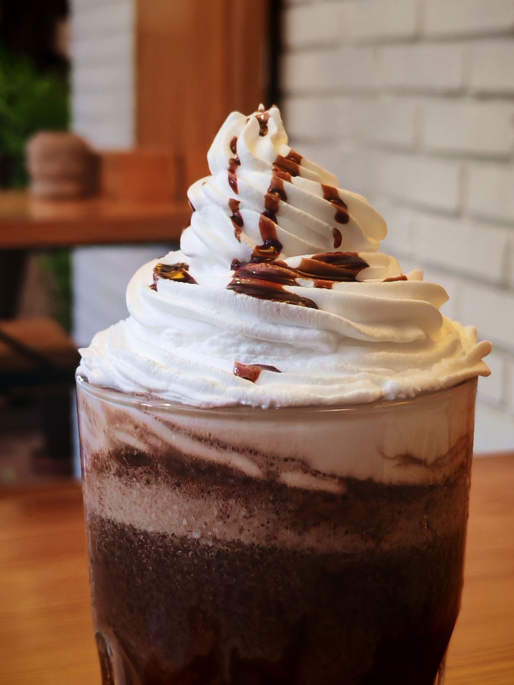

Cafe Mocha

A cafe mocha is a coffee drink made with espresso, steamed milk, and chocolate syrup. It is a popular choice for those who enjoy a sweet and indulgent espresso beverage. The type of chocolate used varies on preference and the availability within the coffee house.
Cafe Miel
A cafe miel is a coffee drink made with espresso, steamed milk, cinnamon,and honey syrup. It is a popular choice for those who enjoy a natural and sweet espresso beverage. Many people enjoy this beverage with an alternative milk such as oatmilk, but this depends on the availability within the coffee house.